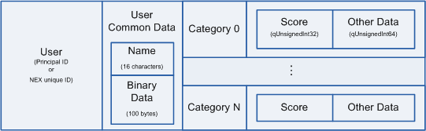
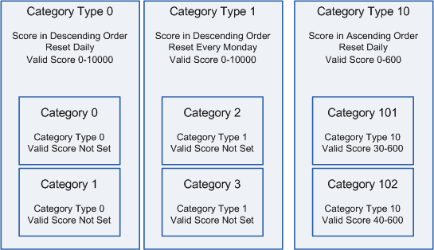

6. Ranking2
6.1. Introduction
Ranking2 is a feature for generating rankings based on the scores registered by users. The scores registered by users are tallied by the server, and users can then obtain their ranking in the game.
A user can have, and register, many types of scores, and these scores can be handled individually to generate separate rankings, and to register data related to the scores. For example, a game where the time it took to clear a level, and the number of coins that were collected, are registered as scores. These two scores can be ranked separately, and a data ID for the replay data can be associated with the scores.
Different kinds of rankings can be obtained, such as the top rankings, the rankings of other players near one's own ranking, and the rankings of friends. You can also get rankings for a specific period of time, such as rankings for today or rankings for this month.
Ranking2 is separate from the existing rankings feature. Ranking2 and the existing ranking feature use different databases and cannot access data from each other's databases. Ranking2 does not have the extensive filtering features provided by the existing ranking feature; however, limitations on API function call frequency are more lenient in Ranking2.
Follow the existing rankings guidelines when using Ranking2.
6.2. Basic Overview of Ranking2
Ranking2 keeps track of scores both on a per-user and per-category basis and updates the rankings accordingly.
Scores and rankings are reset after a prescribed period of time.
Ranking2 saves the types of data shown in Figure 6.1 for each user.

Figure 6.1. Information Saved on the Game Server
6.2.1. Scores
Ranking2 uses 32-bit, non-negative, integers (0 through 4,294,967,295) to represent scores.
You can configure whether to rank scores in ascending or descending order for each type of ranking.
You can also configure what ranges of scores are valid. Out-of-range scores are treated as invalid scores (achieved by unfair play and so on) and are saved in a separate location where they will not appear in rankings.
6.2.2. Categories
In Ranking2, categories are used to provide various types of rankings. Scores are maintained for each category and can be retrieved from those categories to create the corresponding rankings.
A single user can only post a single score in each category. When a user posts multiple scores to the same category, only the highest score is kept.
Ranking2 uses 32-bit, non-negative integers, to represent categories. The values used for categories do not need to be consecutive or continuous.
Each category must belong to a single category type.
For more information, see Category Settings.
6.2.3. Category Types
Category types represent groups of categories that work the same way. Up to 256 category types can be defined. Category types are non-negative integers from 0 through 255.
Each category type maintains its own settings, and categories inherit the settings of the category type to which they belong.
The following settings can be configured for each category type.
- Minimum/maximum possible score.
- Score order.
- Last place (in the rankings).
- Number of past seasons to save.
- Periodic reset mode.
- Periodic reset time/day/month.
For more information, see Category Type Settings.
6.2.4. Users
Ranking2 manages users who post scores using principal IDs or NEX unique IDs.
Users are usually managed using principal IDs.
Users can only be managed using NEX unique IDs if those NEX unique IDs are issued and associated with the corresponding principal IDs in advance. For more information about NEX unique IDs, see Using Password-Protecting NEX Unique IDs.
Each API function allows you to specify a principal ID and a NEX unique ID. Table 6.1 shows the ID that Ranking2 users ultimately use in each case. API functions that do not take a principal ID as a parameter, automatically use the principal ID of the client that called the API function.
| Principal ID | NEX Unique ID | ID Used |
|---|---|---|
| Not specified | Not specified | The primary NEX unique ID associated with the principal ID of the user that called the API function.
If no NEX unique ID is associated with the principal ID, the principal ID is used.
|
| Specified | Not specified | The primary NEX unique ID associated with the specified principal ID.
If no NEX unique ID is associated with the principal ID, the specified principal ID is used.
|
| Not specified | Specified | Not allowed |
| Specified | Specified | The specified NEX unique ID.
QERROR(Ranking2, InvalidArgument) is generated when a specified NEX unique ID is not a NEX unique ID that is related to the specified principal ID. |
6.2.4.1. Cases Where Different NEX Unique IDs Are Used With the Same Principal ID
When associating NEX unique IDs with a principal ID, association will be canceled for NEX unique IDs that are not specified. For this reason, you must consider cases where multiple systems are being used.
In some cases,
QERROR(Ranking2, InvalidArgument)is generated when a call is made where NEX unique IDs are saved and used for save data and other purposes. This happens because the server only keeps the NEX unique IDs that were associated with the principal ID last.Because the
UtilityClient::GetAssociatedNexUniqueIdWithMyPrincipalId()function gets the NEX unique IDs associated with the same principal ID, use this method to check whether there are NEX unique IDs associated with a principal ID before using them with Ranking2.
6.2.5. Common User Data
A name and binary data can be configured for each user. These pieces of information are known as common user data.
Only a single set of common user data can be associated with a single user. Common user data is never associated with scores.
6.2.6. Periodic Resets and Seasons
Ranking2 periodically resets ranking data. This event is known as a periodic reset. After reset, ranking data returns to an empty state, and the number of users who have posted a score to that ranking returns to 0.
The period of time between periodic resets is known as a season. The initial season is 'season 0'. Each time a periodic reset occurs, the season number is incremented by 1. Season numbers go up to 2,147,483,647.
The ranking data associated with a given season is saved as past season data when a reset occurs and can be accessed at a later time.
The interval at which each ranking is reset, as well as the interval of time for which past season data is saved, must be configured in advance for each category type.
For more information about periodic resets, see Periodic Reset Settings.
6.3. Ranking2 Workflow
This is the basic workflow when you use Ranking2.
- Log in to the game server.
- Initialize a service client. For more information, see 6.4.
- Use the desired Ranking2 features.
- Finalize the service client, and log out from the game server.
6.4. Initializing and Finalizing a Service Client
Initializing and finalizing a Ranking2 service client (Ranking2Client) involves the same processes as in matchmaking. For more information, see 4.3.
6.5. Uploading Scores
You can use the Ranking2Client::PutScore() function to register and change scores.
Table 6.2 shows the score attributes that you can set to a Ranking2ScoreData object.
| Item Name | Description | Values Allowed | Initial Value | Function Used |
|---|---|---|---|---|
| Category | Specifies the category number of the category to which to upload the score. | 32-bit, non-negative, integer | 0 | SetCategory() |
| Score | Specifies the score. | 32-bit, non-negative, integer | 0 | SetScore() |
| Other data | Specifies data to associate with each score. | 64-bit, non-negative, integer | 0 | SetMisc() |
Any 32-bit, non-negative, integer between 0 and 4,294,967,295 can be specified for the score, but it is also possible to set upper and lower limits so that invalid scores do not get registered. For more information, see Minimum/Maximum Valid Score.
The other data can contain any 64-bit value. Unlike common user data, this value is associated with a score. When a single user posts scores to several categories, this value can be different for each category. For example, this other data can be used to store the data ID of replay data associated with the score that is saved in a data store.
This function can only be used to register scores associated with the principal ID of the local user.
6.5.1. Last Place
In Ranking2, set the last place to remain in the ranking for each category type. Scores lower than the score of the user in last place are not saved if uploaded. In addition, when a new user takes first place in the rankings, the score associated with last place is updated, and data associated with lower scores is periodically deleted. As a result, not all users who post scores will appear in the rankings when the rankings are later retrieved.
Last place is not necessarily equal to the total number of ranked scores due to the following. Up to 100 users can be tied for last place, so the total possible number of ranked scores is last place + 100. If last place is one thousandth, for example, up to 1100 scores can be ranked. Therefore, if the user with the lowest score is currently ranked nine hundred ninety-fifth and a large number of other users get the same score, there could be up to 106 users tied for nine hundred ninety-fifth.
6.6. Getting Rankings
Use the Ranking2Client::GetRanking() function to get rankings.
You can choose to get a variety of different kinds of rankings, including top rankings, nearby rankings, or friend rankings.
6.6.1. Ranking Types
The ranking type (mode) is specified by Ranking2GetParam, which is passed to the Ranking2Client::GetRanking() function as a parameter. Table 6.3 shows the kinds of rankings you can retrieve.
| Type (Mode) | Value | Overview |
|---|---|---|
| User ranking | Ranking2Mode:: |
Gets the ranking data for the specified user. |
| Range ranking | Ranking2Mode:: |
Gets rankings in the range of the specified starting position and length. |
| Nearby rankings | Ranking2Mode:: |
Gets rankings near the specified user. |
| Friend rankings | Ranking2Mode:: |
Gets the rankings of friends of the local host. |
| Principal ID rankings | Gets the rankings for the specified list of principal IDs. |
User ranking mode gets rankings for the specified user. If no NEX unique ID is specified and multiple NEX unique IDs are associated with the user in question, the data for all of those NEX unique IDs is retrieved.
Range ranking mode gets the specified number of scores starting from the specified place in the ranking.
In nearby ranking mode, the ranking of the specified user is in the middle of the list. If the specified user ranks near the top or the bottom, this might not be the case. The specified number of scores are retrieved unless there are fewer than that many scores currently in the ranking. For example, if the specified user is in third place and you specify to get 10 scores, the data for first through tenth will be retrieved. If the specified user is not ranked, empty rankings are retrieved.
Friend ranking mode gets rankings that include only the local user and friends of the local user. If a player does not have any friends, this gets only that player's data. If one or more NEX unique IDs is associated with the principal IDs of the local user and the local user's friends, the data for all of those NEX unique IDs is retrieved.
Principal ID ranking mode allows you to directly specify a list of principal IDs for which to get rankings. This mode uses an overload of the Ranking2Client::GetRanking() function that takes both the Ranking2GetByListParam parameter and a list of principal IDs. If one or more NEX unique IDs are associated with the specified principal IDs, the data for all of those NEX unique IDs is retrieved.
You can get up to Ranking2Constants::MAX_FRIEND_RANKING_LENGTH friend rankings and up to Ranking2Constants::MAX_RANKING_LENGTH other rankings.
6.6.2. Ranking Retrieval Parameters
Use the Ranking2GetParam and Ranking2GetByListParam ranking retrieval parameters to specify conditions for ranking retrieval. For more information, see Table 6.4.
| Item Name | Overview | Initial Value | Function Used |
|---|---|---|---|
| Ranking type (mode) | Specifies the ranking retrieval mode. For more information, see 6.6.1. (For Ranking2GetParam only.) |
Ranking2Mode:: |
SetMode() |
| Category | Specifies the category from which to get rankings. | 0 | SetCategory() |
| Past Seasons | Specifies whether to get rankings for a past season. For more information, see 6.2.6.. Specify 0 for the current season, 1 for the most recent past season, 2 or larger for the season before that, and so on. |
0 | SetNumSeasonsToGoBack() |
| Sort flags | Specifies sort option flags. | Ranking2SortFlags:: |
SetSortFlags() |
| Option flags | Specifies option flags. | Ranking2GetOptionFlags:: |
SetOptionFlags() |
| Start position | Specifies the position in rankings at which to start retrieving scores. This specification is ignored in user ranking mode and nearby ranking mode. | 0 | SetOffset() |
| Length (number of scores) | Specifies ranking length (the number of scores to get). For friend rankings, you must specify a value between 1 and Ranking2Constants::. For other rankings, you must specify a value between 1 and Ranking2Constants::. This specification is ignored in user ranking mode. |
10 | SetLength() |
| Principal ID | Specifies the principal ID for which to get rankings. (For Ranking2GetParam only.) |
INVALID_ |
SetPrincipalId() |
| NEX Unique ID | Specifies the NEX unique ID for which to get rankings. (For Ranking2GetParam only.) |
INVALID_ |
SetNexUniqueId() |
6.6.2.1. Start Position
Start position is not a ranked place in the rankings.
In range ranking mode, specifying a start position allows you to get rankings starting from the specified position, where the first score in the rankings is in position 0. In rankings where two users are tied for first place and a third user is in third place, for example, specifying a start position of 1 would get the rankings starting from the second user who was tied for first place.
In friend ranking mode and principal ID ranking mode, specifying a start position allows you to get rankings starting from the specified position, where the first user in the list of users for which to retrieve rankings is in position 0. This list is a friend list or a list of principal IDs. However, if each user has a NEX unique ID, it can be a list of all of those NEX unique IDs. If the list is greater than Ranking2Constants::MAX_RANKING_LENGTH entries in length, only the rankings for the specified start position to Ranking2Constants::MAX_RANKING_LENGTH are included. However, you can get the rankings multiple times by changing the start position as appropriate each time to get a larger number of rankings.
6.6.2.2. Past Seasons
This parameter specifies to get rankings for a past season. For example, you can specify to get yesterday's rankings or the rankings for two weeks ago.
Ranking data from a season older than the "number of past seasons to save" setting in category type settings is deleted, so QERROR(Ranking2, InvalidArgument) occurs and this data cannot be retrieved.
If a larger value is specified than the current season, the season value of the ranking acquisition results is negative. The equation is as follows: (current season value) - (past season value specified when getting rankings). For example, suppose that the "number of past seasons to save" is high enough, and the current season is 3. If 11 is specified as the past season, the season value in the ranking acquisition results is -8. The acquired rankings are also blank.
This value cannot be specified when working with rankings that are not periodically reset.
6.6.2.3. Sort Flags
Sort flags allow you to specify how ranked scores are sorted. Table 6.5 shows the available sort flags. Basic sorting settings (ascending order or descending order) are configured by category type and cannot be specified when getting rankings.
| Item Name | Description |
|---|---|
| Ranking2SortFlags:: |
Prioritizes the user that called the function in the event of a tie. |
6.6.3. Ranking Retrieval Results
Ranking results are stored in a Ranking2Info object. The Ranking2Info object includes the following members.
- Ranking data list (
qVector<Ranking2RankData>)
- The function returns an empty list if there is no ranking data matching the specified parameters.
- When getting friend rankings for a particular user, only the users that have been ranked are included in the returned list.
- Setting for the last place in the rankings.
- The value in category type settings that represents how many places are ranked.
- The last place rank may not necessarily be present in the retrieved ranking data list.
- If several users are tied for last place, the effective last place may be different than the last place rank specified in category type settings.
- Example: Last place was set to one hundredth, but three users are tied for ninety-eighth. The effective last place is ninety-eighth, not one hundredth.
- Number of scores in the applicable ranking category.
- The number of currently ranked scores. Scores lower than the current last place score are not included.
- This number is not equal to the length of the retrieved ranking data list.
- If several users are tied for a certain place, the total number of ranked scores may be greater than the last place value specified in category type settings.
- Example: Last place was set to one hundredth, but five users are tied for one hundredth. Therefore, there are a total of 104 ranked scores.
- Season number
- The season number of the season for which the ranking data was retrieved. This is not the number of the current season.
Table 6.6 shows the items than you can get from Ranking2RankData.
| Item Name | Get Function |
|---|---|
| Rank | GetRank() |
| Score | GetScore() |
| Principal ID | GetPrincipalId() |
| NEX Unique ID | GetNexUniqueId() |
| Common user data | GetCommonData() |
| Other data | GetMisc() |
6.6.4. Tied Scores
In Ranking2, equal scores are treated as ties.
In the retrieved ranking data list, (qVector<Ranking2RankData>), tied scores are not ordered in any specific way.
However, you can specify sort flags when getting the ranking data to partially specify how tied scores are ordered.
If you want to use some other sort order, consider using a different type of score format when initially creating the ranking. For example, you could use the lower bits of a score value for date information and the upper bits of the score value for the score itself to sort tied scores by date.
6.7. Ranking Approximation
The ranking of the specified score can be estimated with the Ranking2Client::GetEstimateScoreRank() function. In the ranking, the correct order can be determined when the rank is above the lowest rank, and the estimated order is determined when the rank is lower. Sampled score data is used for approximation. For more information about sampled score data, see About Sampling.
6.8. Common User Data
Use the Ranking2Client::PutCommonData() and Ranking2Client::DeleteCommonData() functions to upload, modify, and delete common user data for the local user.
Use the Ranking2Client::GetCommonData() function to get common user data for the local user or other users. You can also get common user data from the Ranking2RankData object returned when getting ranking data.
The maximum characters allowed in a user name is defined by Ranking2Constants::MAX_USERNAME_LENGTH.
The maximum length (in bytes) of binary data is defined by Ranking2Constants::MAX_BINARY_DATA_LENGTH.
Note:
Follow the UGC guidelines when registering common user data that includes UGC. Common user data can also be deleted using WebAPI.
6.9. Settings
Ranking2 provides settings for configuring ranking categories and ranking category types.
Use WebAPI (see 11.3) to configure these settings.
Only clients can get these settings.
6.9.1. Category Settings
In category settings, you can specify the category type to which each category belongs. If left unspecified, the default category type is 0.
You can also configure the minimum and maximum valid scores. This setting is included in category type settings, but it can be configured individually for each category if necessary. If left unspecified, the category inherits the setting configured for the corresponding category type. For more information, see Minimum/Maximum Valid Score.
6.9.2. Category Type Settings
Table 6.7 shows the category type settings that are currently available.
| Item Name | Description | Values Allowed | Initial Value |
|---|---|---|---|
| Minimum valid score | Specifies the minimum valid score. | 32-bit, non-negative, integer | 0 |
| Maximum valid score | Specifies the maximum valid score. | 32-bit, non-negative, integer | 4294967295 |
| Score order | Specifies the score order (ascending or descending). | 0 (ascending), 1 (descending) | 1 |
| Last place (in the rankings). | Specifies the last ranked place. For more information, see 6.5.1. | 1 to 10000. | 10000 |
| Number of past seasons to save. | Specifies the number of past seasons to save. For more information, see 6.2.6.. | 0 to 100. | 5 |
| Periodic reset mode | Specifies the periodic reset mode. | Ranking2ResetMode | Ranking2ResetMode:: |
| Periodic reset time | Specifies a time of day at which to reset rankings. | 0 to 23. | 0 |
| Periodic reset day | Specifies a day of the month or day of the week on which to reset rankings. | 1 to 28 (for days of the month) or 0 to 6 (for days of the week). | 1 |
| Periodic reset month | Specifies a month in which to reset rankings. | 1 to 4095. | 4095 |
Figure 6.2 shows an example category type setting configuration.

Figure 6.2. Category Settings Example
6.9.2.1. Minimum and Maximum Valid Score
Specifying a minimum score and a maximum score ensures that scores that are not within the specified range or scores that are invalid because they are achieved by unfair play or similar do not appear in rankings. Invalid scores are saved in a location separate from normal ranking data where they cannot be accessed by clients. Use WebAPI (see 11.3.) to access or delete invalid scores.
Minimum and maximum valid scores can be configured both for category types as well as for individual categories. If minimum and maximum valid scores are set for an individual category, those settings are prioritized over the settings configured for the corresponding category type.
For example, this makes it possible to have rankings for stage clear time for each stage in a game. In the example shown in Figure 6.2, category type 10 is for handling stage clear time (in seconds). The score order is ascending (faster times are ranked higher). This category type includes a category for each stage in the game, and the valid clear times for each stage are set individually. Category 101 is for stage 1, which cannot be cleared in less than 30 seconds. Category 102 is for stage 2, which cannot be cleared in less than 40 seconds. The valid assumed range of scores is configured for each category. In this way, clear times can be ranked separately for each stage, using the valid score ranges configured for each.
When the range of valid scores for a category is changed, Ranking2 immediately checks the scores for all categories and immediately moves any invalid scores as needed. After a score is marked as invalid, it remains in the location for invalid scores. Even if a change to the range of valid scores makes that score valid again, it does not return to the normal rankings.
6.9.2.2. Periodic Reset Settings
Table 6.8 shows the periodic reset settings (modes) that are currently available.
| Type (Mode) | Value | Overview | Required Parameters |
|---|---|---|---|
| None | Ranking2ResetMode:: |
Rankings are not periodically reset. | Not specified |
| Every day | Ranking2ResetMode:: |
Rankings are reset every day at the specified time of day. | Time of day (hour) |
| Every week | Ranking2ResetMode:: |
Rankings are reset every week at the specified time of day, on the specified day of the week. | Day of week, time of day (hour) |
| Specified months | Ranking2ResetMode:: |
Rankings are reset at the specified time of day, on the specified day, of the specified months. | Months, day of month, time of day (hour) |
| Specified months (weekday) | Ranking2ResetMode:: |
Rankings are reset at the specified time of day on the first specified day of the week of the specified months. | Number of months, day of week, time of day (hour) |
Time and date settings occur in UTC.
The months in which to reset rankings are specified as a 12-bit binary value, where each bit represents one month. The lowest bit is January, the next bit is February, and so on. Periodic resets are performed in the months corresponding to the bits that are set to 1.
The days on which to reset rankings are specified differently depending on the periodic reset mode. Specify a value from 1 to 28 for modes that require a day of the month. Specify a value from 0 (Monday) to 6 (Sunday) for modes that require a day of the week.
By uploading the same scores to several different category types that each have different periodic reset settings, you can create rankings for different periods of time (daily, weekly, monthly, and so on.). In the example shown in Figure 6.2, the category types 0 and 1 differ only in terms of the periodic reset setting. The same scores are uploaded to both category 0 and category 2. However, the scores in category 0 are reset every day, while the scores in category 2 are only reset every Monday. This allows you to easily create daily and weekly rankings.
To reduce processing costs, Ranking2 does not reset rankings at exactly the specified time of day. The reset process is started at a random time within one minute of the specified time. Be aware of this when using Ranking2 in your application.
When using periodic resets, you can use a different category type for each region to specify a different reset time for each. This allows you to choose a time at which the number of users logged in is small, or a time that is convenient for users or the game itself, in each region.
6.9.3. Getting Settings From the Client
Use the Ranking2Client::GetCategorySetting() function to get category settings on a client device.
This function gets the settings for both the specified category and the category type to which the specified category belongs. For settings that are present in both the category configuration and the category type configuration, the category settings are prioritized.
These settings cannot be modified from the client side.
6.10. Ranking Charts
Ranking charts are a feature to create a score histogram for each category. A histograms is extrapolated from sampled score data, and also includes the distribution of scores below the lowest ranking. The data expressing this histogram is referred to as ranking chart data.
6.10.1. Server Settings
The category and number of partition segments of the ranking that you wish to create must be set in advance. Configure the settings using WebAPI (11.3.7.) and the like.
| Item Name | Description |
|---|---|
| Index number | Ranking chart data identifier. Can be specified with uint32_ values. Required. |
| Category | Ranking2 category on which ranking chart data generation is based. Required. |
| Partition segment count | Number of partition segments in ranking chart data. Maximum value is 255. Required. |
| Highest score | Scores higher than this score are not tabulated. When not specified, the highest score of the ranking on which generation is based is used. |
| Minimum score | Scores lower than this score are not tabulated. When not specified, the (estimated) lowest score of the ranking on which generation is based is used. |
| Highest segment score | Specified when you want to fix the value of the highest score at which to end a distribution chart segment. If this value is not included, values will be tabulated up to one lower value. Automatically adjusts when not specified (explanation follows). |
| Lowest segment score | Specified when you want to fix the value of the lowest score at which to start a distribution chart segment. Automatically adjusts when not specified (explanation follows). |
| Adjust to median value | Specify 1 to automatically adjust the highest segment score and lowest segment score so that the median score value is at the center of the segment range. Specify 0 to disable this feature. Observed as 0 when not specified. |
| Optional setting 1 | Use when a setting is required by the application. Can be specified with uint32_ values. Observed as 0 when not specified. |
| Optional setting 2 | Use when a setting is required by the application. Can be specified with uint32_ values. Observed as 0 when not specified. |
| Comments | Text string that can be retrieved from WebAPI or can be displayed on NMAS. Cannot be retrieved from the application. Becomes a null string when not specified. |
6.10.1.1. Segment Width
The segment width is automatically set to the smallest integer at which the partition segment count * segment width is greater than the score range. If the score range is small, the segment width may be adjusted so that there are segments without any scores. For example, if the partition count is 200 and the scores acquired by the user are in the range of 0 to 300, the actual distribution chart will be created in the range of 0 to 400 because the width of the segment width is 2. To avoid this, make the range of scores larger. For example, if multiplying the scores by 100 to make the range 0 to 30000, the distribution chart will be for 0 to 30000.
6.10.1.2. When the Segment Range is Fixed
Specify both the highest segment score and lowest segment score if you want to specify the segment range regardless of the score distribution. In this case, the median adjustment setting is ignored.
6.10.1.3 Segment Auto-Adjustment
The segment will be adjusted based on the highest score and the lowest score. The segment will be shifted and scores tabulated so that the minimum segment score (for ascending order) or the maximum segment score (for descending order) is 0 or greater.
If median value adjustment is enabled, the segment range, from the median of the scores to the lowest score, is determined based on the segment range from the highest score to the median of the scores. If the distribution of the rankings is concentrated on the high side, the lower scores are truncated. If the distribution of the rankings is concentrated on the low side, the segment in which there are no lower scores will also be included.
6.10.1.4. When the Segment Range is Fixed
In each segment the lower scores are included in the range and the higher scores are not included in the range. The value of the maximum segment score is not included.
If you want to get descending order ranking chart data from 100 points to 0 points, in 10-point increments, you must set up an 11-partition chart with the lowest segment score set to 0, the highest segment score to 110, and the partition segment count to 11. After getting this, total the number of [90, 100) segments and the number of [100, 110) segments. ([90, 100) means 90 or higher and less than 100.)
For ascending order, the maximum ranked score of 0 cannot be included in the end point. If you want to include 0, you will need to employ a technique such as shifting the values recorded, or the like.
6.10.1.5 About Sampling
Ranking chart data for portions of each category that are below the lowest rank, are created based on sampled score data. Sampled score data is created by extracting a random sampling from the population of all scores recorded up to the present (systemic sampling based on the principal ID and NEX unique ID), regardless of the minimum ranking. Ranking chart data are automatically generated for each category, even if they have not been set. The probability of being selected as a sample is automatically adjusted to keep the number of samples within a set range.
6.10.2 Get Ranking Chart Data
The Ranking2Client::GetRankingChart() function can be used to get specified ranking chart data.
For more information about ranking chart data, see Ranking2ChartInfo.
As an example of the use of the Ranking2ChartInfo::GetQuantities() function with the ranking chart data obtained in descending order, if for example Ranking2ChartInfo::GetHighestBinsScore() is 100, Ranking2ChartInfo::GetLowestBinsScore() is 0, and Ranking2ChartInfo::GetBinsSize() is 5, then the function will include five bins in the order [80, 100), [60, 80), [40, 60), [20, 40), and [0, 20). ([80, 100) means 80 or higher and less than 100.) If the data is obtained in ascending order, then if for example Ranking2ChartInfo::GetHighestBinsScore() is 1000, Ranking2ChartInfo::GetLowestBinsScore() is 2000, and Ranking2ChartInfo::GetBinsSize() is 5, then the function will include five bins in the order [1000, 1200), [1200, 1400), [1400, 1600), [1600, 1800), and [1800, 2000). ((1000, 1200] means greater than 1000 and less than or equal to 1200.)
6.10.3 Update Timing
Checks whether it is necessary to periodically create ranking chart data at 10 minute intervals.
When there has been an update to the ranking data, the data is updated at from 1-hour to 24-hour intervals, from the previous update, according to the data volume.
6.11. Differences With the Existing Ranking Features
Ranking2 includes several modifications and omissions to the existing ranking feature set, to enhance convenience and usability.
6.11.1. Modified Features
Getting Past Rankings
You can specify a past season when getting rankings. For more information, see 6.6.2.2.
6.11.1.1. Last Place Score
With the existing ranking features, the amount of score data continued to increase until it became problematic. In Ranking2, scores less than the specified last place score are automatically deleted. For more information, see 6.5.1.
Accordingly, the concept of a threshold position in the rankings after which rankings were no longer accurate (RankingConstants::MAX_ACCURATE_ORDER) was removed entirely.
Finally, there is no rank prediction feature or first place caching feature because all positions in the rankings, down to last place, can be retrieved normally at all times.
6.11.1.2. Common User Data
Unlike the common user data for the existing ranking features, the user name and associated binary data can be saved separately. For more information, see 6.2.5.
6.11.1.3. Sorting Tied Scores
Specifying the sort flag when getting rankings makes it possible to prioritize the user that retrieved the rankings in the event of a tie. For more information, see 6.6.2.3..
6.11.2. Omitted Features
6.11.2.1. Filtering by Groups
Ranking2 does not include a feature for filtered scores by groups associated with those scores. All of the scores in a given category are retrieved when retrieving rankings.
However, you can create multiple different categories to which the same scores are uploaded and use those categories to filter scores as they are uploaded. To do this, use the overload of the Ranking2Client::PutScore() function that can upload multiple scores at the same time.
For example, with the existing ranking features you might do the following.
- Assign a group value between 0 and 3 to each score when the score is uploaded.
- Filter scores by those that are only in group 0 or only in group 1 when retrieving rankings.
To perform the same action in Ranking2, you would do the following.
- Create a common category that will contain scores for all of groups 0 through 3.
- Create dedicated categories for groups 0 through 3.
- When uploading a score, upload that score both to the corresponding group category and to the common category.
- To filter for scores in a certain group when getting scores, retrieve the scores from the dedicated category created for that group.
- When you do not want to filter scores, get the scores from the common category.
6.11.2.2. Filtering by Update Time (Time Scope)
Ranking2 does not include a feature for filtering scores by the time they were uploaded. All of the scores in a given category are retrieved when retrieving rankings.
Instead, you can create several category types with different periodic reset modes, along with some associated categories, and upload the same scores to each category.
In the following configuration, for example, the same scores are uploaded to category 0 and category 1, and the same scores are uploaded to category 10 and category 11. However, the period of time those scores remain in each category differs.
- Category type 0: Reset scores every day.
- Category type 1: Reset scores every month.
- Category 0: Scores uploaded when a certain item is collected. Belongs to category type 0.
- Category 1: Scores uploaded when a certain item is collected. Belongs to category type 1.
- Category 10: Scores uploaded when an enemy is defeated. Belongs to category type 0.
- Category 11: Scores uploaded when an enemy is defeated. Belongs to category type 1.
6.11.2.3. Calculation of Ties
Equal scores are always treated as ties. For more information, see 6.6.4. You cannot specify a certain tie calculation method like RankingConstants::ORDER_CALCULATION_123 in the existing ranking features.
If you want to eliminate ties, increase the number of digits used for scores and use the lower bits to store additional information (such as dates), for example.
6.11.2.4. Score Statistics
Ranking2 does not provide any score statistics (total score, maximum or minimum score, average score, and so on).
You can use the Ranking2Info::GetNumRankedIn() function to get the current number of ranked scores in a ranking category. This number will be different from the total number of scores ever uploaded to that category due to deletion of scores lower than the last place score.
6.11.2.5. Score Deletion
Uploaded scores cannot be deleted from client devices.
6.11.2.6. Score Update Mode
Ranking2 does not have a feature equivalent to the RankingConstants::UPDATE_MODE_DELETE_OLD mode in the existing ranking features, which always uploads new scores even if they are lower than an existing score.
6.12. Error Handling
6.12.1. Errors During Function Calls
If you call a function and it returns an error without starting asynchronous processing, your code may contain one or more bugs. Check whether the NEX library has been successfully initialized, and whether you have logged in to the game server.
6.12.2. Asynchronous Processing Errors
Error handling is the same as for matchmaking. See 4.24. Error Handling.
Table 6.10 lists the errors that can occur in Ranking2. This table excludes NEX communication errors and other processes. For more information about NEX asynchronous processing and error handling, see Asynchronous Processing.
| ReturnCode Value | Overview |
|---|---|
| QERROR(Ranking2, InvalidArgument) | An invalid argument was specified. This is an implementation error, fix your implementation. |
| QERROR(Ranking2, Unknown) | Unknown error occurred. Abnormal server configuration. Please contact Nintendo if this error occurs. |
6.13. NEX Game Server Management System (NMAS)
The Ranking2 management features of the NEX Server Management System (NMAS) provide ways to perform operations like viewing the scores registered in rankings, configuring categories and category types, and deleting all scores. The tool supports both the development environment and the actual production environment.
6.13.1. Accessing the Management Tool
Access this management tool from the following URL.
https://nmas.tool.n.mng.nintendo.net/
Use the same login ID and password that you use for OMAS.
6.14. Notes
6.14.1. Predicted Number of Scores
Ranking2 was designed on the assumption that most titles will use no more than 10,000,000 scores. Please contact Nintendo for titles that may exceed 10,000,000 scores.
You can estimate the number of scores using the following formula. For ranking category or category type configurations in which last place or the number of past seasons of data to save are not equal in every category, use the following formula for each individual category and then calculate the sum of the resulting values.
Estimated number of scores = Number of categories × Last place (If using periodic resets, multiply this value by the number of past seasons of data that will be saved + 2).
In Ranking2, the default last place is ten thousandth, and the default periodic reset mode is none. Therefore, up to 100 categories can be used with these default settings.
Ranking2 automatically deletes scores lower than the last place score, so normally, the number of scores does not continue to increase over time. The following case is the only exception.
- Dynamic generation of categories.
- The number of scores increases as the number of categories increases.
- Dynamic generation of categories can result in an especially large amount of accumulated data if you do not use periodic resets, so configure your categories and category types while being aware of this issue.